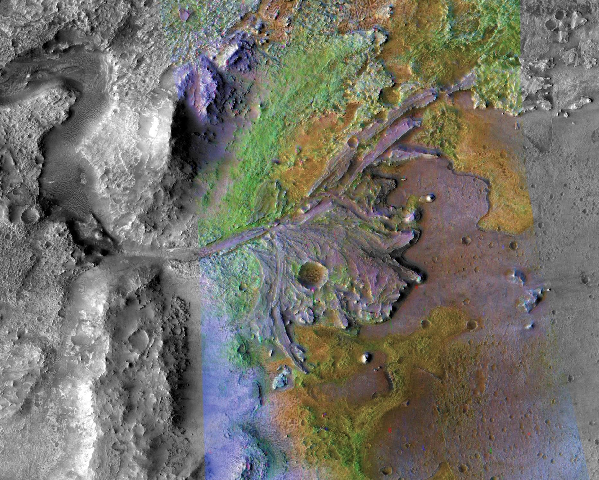

Cráter Jezero: un lago que se secó hace miles de millones de años
Jezero es un cráter de impacto de 45 km de diámetro en el borde oeste de Isidis Planitia. Hace unos 3.500 millones de años guardó un lago, y un río que entraba por el oeste dejó un delta en forma de abanico, con arcillas y carbonatos que se forman en presencia de agua.
Por eso la NASA lo eligió para el rover Perseverance, que aterrizó ahí el 18 de febrero de 2021: los sedimentos de un lago son de los mejores lugares para buscar rastros de vida antigua. El rover junta muestras de roca que una misión futura podría traer a la Tierra.
Su nombre viene de un pueblo de Bosnia y Herzegovina, y en varias lenguas eslavas jezero significa «lago».

No elegimos estos lugares: los encontraron los datos.
-
01
Medimos el sitio de Marte
Con datos orbitales resumimos el sitio en variables numéricas: pendiente, relieve local y albedo.
-
02
Medimos toda la Tierra
Calculamos las mismas variables, con el mismo método, para cada celda del planeta.
-
03
Comparamos variable por variable
Cada variable da un puntaje de 0 a 100 %. El puntaje total las combina, y la escala de color lo muestra en el mapa.
-
04
Validamos con lo conocido
Si el método encuentra solo los análogos que ya se usan, como Atacama o Islandia, podemos confiar en los lugares nuevos.
Lo que ningún lugar de la Tierra puede reproducir
Un análogo se parece en el terreno, no en el planeta. Estas diferencias no entran en el puntaje y valen para todos los sitios del mapa.